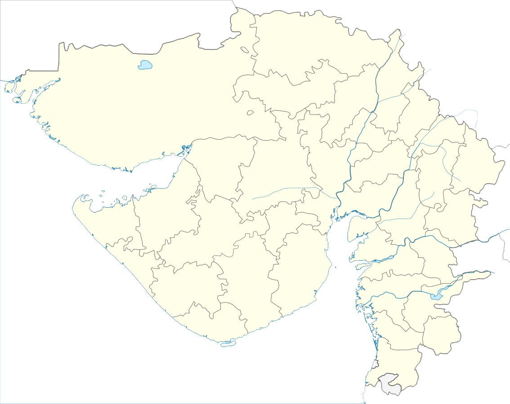

"The sand is exactly white as shown in picture.The ocean of white sand stands out stark and pristine in its colourless, interrupted only by passing hoards of camel. On moonlit light, the desert reveal another colour. Something that can hardly be described in words.
Which color of kutch will catch your eye? May be the one I couldn't find."
Vadodara
The city is mixture of many eras and its reputation as "Cultural Capital" dates largely from the late 19th c, when it was the capital of the pricely state of Baroda.


